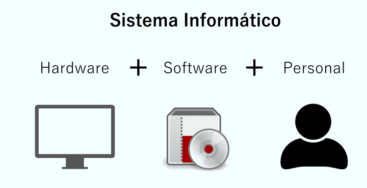
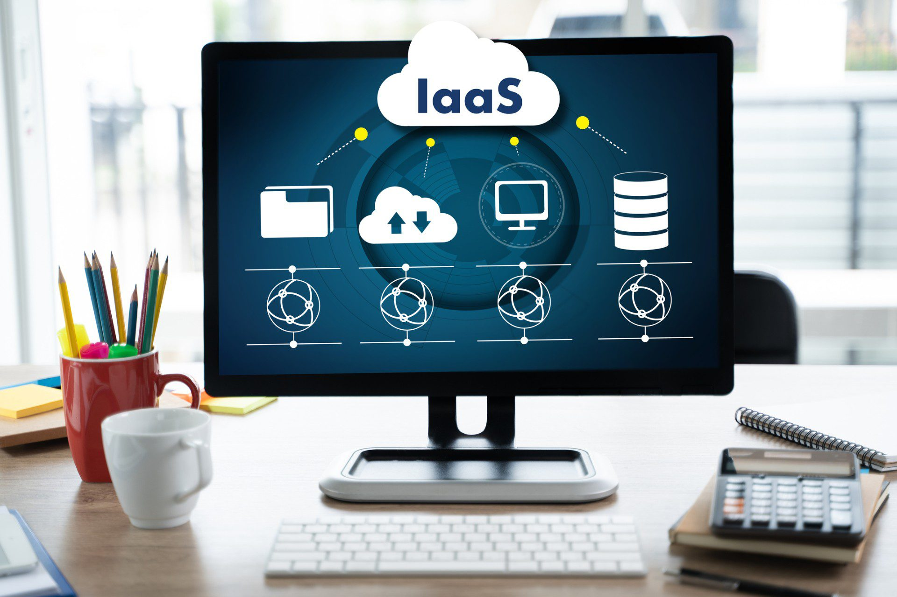

Las "estructuras informáticas" se refieren a la organización y disposición de los componentes en un sistema informático. Estas estructuras son fundamentales para el diseño y funcionamiento de cualquier sistema computacional, ya sea un simple dispositivo o una red compleja. Aquí hay una definición general:
Las estructuras informáticas abarcan una amplia variedad de conceptos y componentes, que incluyen:
Arquitectura de Hardware:La disposición y conexión de los componentes físicos de un sistema, como la unidad central de procesamiento (CPU), la memoria, los dispositivos de entrada/salida y los dispositivos de almacenamiento.
Arquitectura de Software:La organización y diseño lógico de los programas y sistemas operativos que se ejecutan en el hardware. Esto incluye la estructura de los programas, la gestión de memoria, el manejo de datos y la interacción entre distintas partes del software.
Redes de Computadora:La disposición y conexión de dispositivos informáticos a través de redes, ya sea local o globalmente. Esto abarca desde configuraciones simples, como redes locales, hasta estructuras más complejas, como la arquitectura de Internet.
Sistemas Operativos:La estructura interna de los sistemas operativos que gestiona los recursos del hardware y proporciona servicios a las aplicaciones. Esto incluye la gestión de procesos, archivos, memoria y dispositivos.
Base de Datos:La organización y estructura de las bases de datos, que define cómo se almacenan, organizan y recuperan los datos. Esto incluye el diseño de tablas, relaciones y consultas.
Algoritmos y Estructuras de Datos:La organización y diseño de algoritmos y estructuras de datos, que son fundamentales para el desarrollo eficiente de software. Esto abarca cómo se almacenan y manipulan los datos, así como los pasos lógicos para realizar operaciones específicas.
On-site
El término "on-site applications" se refiere a aplicaciones informáticas que se implementan, ejecutan y operan directamente en la infraestructura local de un usuario o una organización, en lugar de depender de recursos externos o servicios basados en la nube. Estas aplicaciones están instaladas en los dispositivos o servidores locales y se ejecutan sin la necesidad de una conexión constante a Internet para su funcionamiento.
Las características clave de las on-site applications incluyen:
Localización física: Las on-site applications se instalan y ejecutan en hardware local, ya sea en dispositivos individuales o en servidores de una red interna de una organización. Esto implica que los datos y la ejecución del software están bajo el control directo del usuario o la entidad que administra el sistema.
Independencia de la nube: A diferencia de las aplicaciones basadas en la nube, las on-site applications no dependen de servicios remotos para su funcionamiento continuo. No requieren una conexión constante a Internet y pueden operar de manera autónoma en el entorno local.
Control directo: Los usuarios tienen un mayor control sobre las on-site applications, ya que pueden gestionar su implementación, configuración y mantenimiento directamente en sus propias instalaciones. Esto puede ser beneficioso para aquellos que buscan mantener un mayor nivel de seguridad o control sobre sus datos y operaciones.
Personalización local: La instalación de on-site applications permite la adaptación y personalización específica para satisfacer las necesidades particulares de un usuario o una organización. Pueden integrarse más estrechamente con sistemas locales y ajustarse según los requisitos específicos del entorno.
Seguridad y privacidad:Al operar localmente, las on-site applications pueden proporcionar un mayor nivel de seguridad y privacidad, ya que los datos y procesos se mantienen dentro del entorno controlado por el usuario. Esto puede ser crucial para aquellos que manejan información sensible o confidencial.

IaaS
Infrastructure as a Service, o IaaS, es un modelo de servicios en la nube que proporciona a los usuarios acceso a recursos informáticos fundamentales a través de Internet. En el modelo IaaS, los proveedores de servicios en la nube ofrecen una infraestructura virtualizada compuesta por recursos de hardware, como capacidad de procesamiento, almacenamiento y redes, que pueden ser provisionados y gestionados de manera flexible.
Características
Recursos escalables: IaaS permite la escalabilidad tanto hacia arriba como hacia abajo, lo que significa que los usuarios pueden aumentar o reducir la capacidad de los recursos según sus necesidades. Esto proporciona flexibilidad y eficiencia en el uso de los recursos.
Virtualización: La infraestructura en IaaS se implementa mediante tecnologías de virtualización. Esto implica la creación de máquinas virtuales (VM) que simulan entornos de hardware y permiten la ejecución de sistemas operativos y aplicaciones.
Autoservicio: Los usuarios pueden aprovisionar y gestionar recursos de manera autónoma a través de interfaces web o APIs (Interfaces de Programación de Aplicaciones). Esto reduce la dependencia de la intervención humana en el proceso de implementación y gestión.
Pago por uso: Los usuarios pagan solo por los recursos que consumen, lo que hace que el modelo sea rentable. Este enfoque contrasta con la adquisición de hardware físico, donde se debe invertir en recursos fijos independientemente del uso real.
Ubicuidad y accesibilidad: Los recursos en la nube IaaS están disponibles a través de Internet, lo que permite a los usuarios acceder a ellos desde cualquier lugar con conexión a la red. Esto facilita la colaboración y el acceso remoto a la infraestructura.
Gestión descentralizada: La gestión y mantenimiento de la infraestructura subyacente, como servidores físicos y dispositivos de almacenamiento, recae en el proveedor de servicios en la nube. Los usuarios se centran en la gestión de sus aplicaciones y datos.

PaaS
La Plataforma como Servicio, o PaaS, es un modelo de servicios en la nube que proporciona a los desarrolladores un entorno completo y gestionado para el desarrollo, implementación y mantenimiento de aplicaciones. A diferencia de Infrastructure as a Service (IaaS), donde se proporcionan recursos de infraestructura, en PaaS se ofrece una plataforma que incluye herramientas, servicios y entornos de ejecución para facilitar el ciclo de vida completo de desarrollo de aplicaciones.
Características clave de PaaS: Entorno de desarrollo: PaaS proporciona un entorno completo de desarrollo que incluye herramientas, bibliotecas y servicios necesarios para construir aplicaciones. Los desarrolladores pueden centrarse en la lógica de la aplicación sin preocuparse por la gestión de la infraestructura subyacente.
Gestión de recursos automática: La infraestructura subyacente, como servidores, redes y sistemas operativos, es gestionada automáticamente por el proveedor de PaaS. Los desarrolladores no tienen que preocuparse por tareas de administración, como la configuración de servidores o el escalado de recursos.
Escalabilidad automática: PaaS ofrece la capacidad de escalar automáticamente recursos en función de la demanda de la aplicación. Los desarrolladores no tienen que preocuparse por la gestión manual del escalado, ya que la plataforma se encarga de ello de manera dinámica.
Despliegue y hosting simplificados: PaaS facilita el despliegue de aplicaciones mediante la automatización de procesos. Los desarrolladores pueden cargar su código y dejar que la plataforma se encargue de la implementación, las actualizaciones y el mantenimiento.
Servicios integrados: PaaS proporciona servicios integrados que van más allá de la infraestructura básica. Esto puede incluir servicios de bases de datos, servicios de mensajería, servicios de autenticación, entre otros, que facilitan la implementación de funciones complejas en las aplicaciones.
Colaboración y desarrollo ágil: PaaS facilita la colaboración entre equipos de desarrollo al proporcionar un entorno centralizado y compartido. Además, favorece las prácticas de desarrollo ágil y la entrega continua (DevOps) al automatizar muchos aspectos del ciclo de vida de desarrollo.
SaaS
Software como Servicio, o SaaS, es un modelo de distribución de software en el cual las aplicaciones son proporcionadas por un proveedor de servicios en la nube a través de Internet. En lugar de adquirir y mantener software tradicionalmente instalado en los dispositivos locales, los usuarios pueden acceder y utilizar las aplicaciones SaaS a través de navegadores web u otros clientes ligeros. Este modelo de entrega de software está diseñado para simplificar la implementación, el mantenimiento y el acceso a las aplicaciones.
Características clave de SaaS:
Acceso a través de la web: Las aplicaciones SaaS se acceden a través de un navegador web estándar, lo que elimina la necesidad de instalar y mantener software en dispositivos locales. Esto facilita el acceso desde cualquier lugar con conexión a Internet.
Modelo de suscripción: Los usuarios generalmente pagan por el uso del software a través de un modelo de suscripción, que puede ser mensual o anual. Esto a menudo incluye el costo de mantenimiento, actualizaciones y soporte técnico.
Actualizaciones automáticas: Las actualizaciones de software son gestionadas por el proveedor de SaaS, lo que significa que los usuarios siempre tienen acceso a las últimas características y correcciones de seguridad sin tener que preocuparse por realizar actualizaciones manuales.
Escalabilidad: Los servicios SaaS son escalables y pueden adaptarse a las necesidades cambiantes de los usuarios. Los proveedores de SaaS generalmente ofrecen diferentes niveles de suscripción o planes para satisfacer los requisitos específicos de cada usuario.
Gestión centralizada: La administración y el mantenimiento del software, incluidos los aspectos relacionados con la seguridad y el rendimiento, son responsabilidad del proveedor de SaaS. Esto libera a los usuarios de la carga de gestionar la infraestructura subyacente.
Colaboración: Muchas aplicaciones SaaS están diseñadas para facilitar la colaboración en línea entre usuarios, permitiendo compartir y editar documentos en tiempo real, realizar videoconferencias y colaborar en proyectos de manera eficiente.